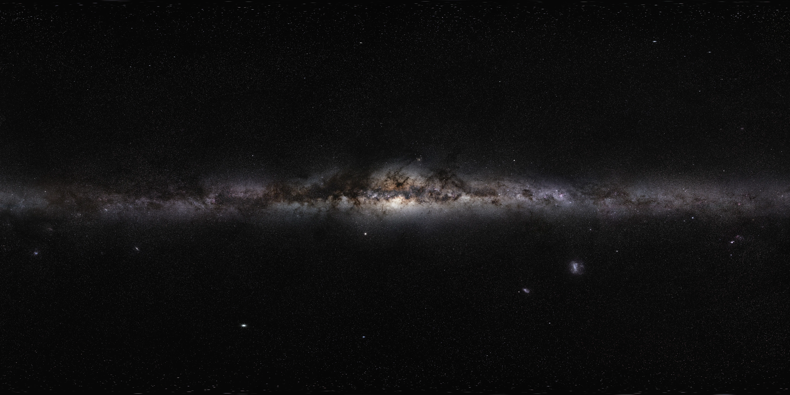

How do we know what shape our Milky Way is?
If you’ve ever been somewhere really dark in the UK and looked up at the night sky, you might have noticed a faint band stretching across it. That glowing strip is the disc of our own galaxy, the Milky Way! It appears as such a thin line because we are inside of our galaxy - its stars, gas, and dust are all around us. But what does the Milky Way actually look like? Since we can’t (yet!) fly outside our galaxy to take a picture, astronomers have to piece together clues by mapping stars and studying their motions. By combining all of this evidence, we can build up a picture of the true shape of our galaxy—but it’s not as straightforward as you might think!
Activity of the day
In this activity, you will step into the shoes of a galactic archaeologist, uncovering evidence about our galaxy and drawing
your own conclusions about what the Milky Way looks like—just like astronomers do. This activity is suitable for all ages
and will be accessible using 3D-printed models.
But before you begin, here are a few important ideas that astronomers use when trying to understand the shape of the Milky Way.
1. We are inside the Milky Way.
Unlike when we look at other galaxies in the night sky, we are sitting inside the Milky Way. This makes things much trickier, because we can’t simply take a picture of it from the outside! We have to find clever tricks to work out its structure from within.2. Galaxies are made up of stars, gas and dust.
The Milky Way isn’t just made of stars. Huge clouds of gas and dust fill the space between them. These clouds can both block light and emit their own signals, helping astronomers map regions that are otherwise hidden.3. Stars are tracers of a galaxy.
Different types of stars can help us map out the galaxy. By measuring where stars are and how they move, astronomers can begin to trace out larger patterns and structures in a galaxy.4. We can see the Milky Way's disc in our night sky!
The thin band you can see in the night sky when you are somewhere very dark is the Milky Way's disc: a flattened region filled with most of the galaxy’s stars, gas, and dust. The disc appears as a long, faint band across the sky because we are inside of the Milky Way!5. Light beyond what we can see...
Astronomers don’t just use visible light. Telescopes can detect other wavelengths too, like radio waves, microwaves or infrared light!These allow us to “see” through dust and uncover parts of the galaxy that would otherwise remain invisible.
No single observation gives the full picture. This is why we use all the information we can get: like the motion of stars and different wavelengths to build up a model of the Milky Way’s shape.